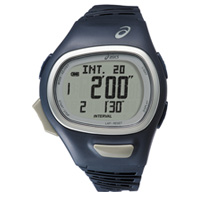
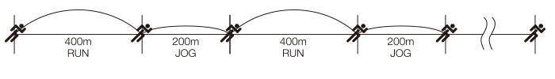

CQAR0602 azul marino

Sólo mediante la introducción de su género, el mejor tiempo durante una carrera de 5 km , y el número de sets de entrenamiento de intervalo , los tiempos objetivo óptimos se calculan utilizando un algoritmo desarrollado por EL Instituto de Ciencias del Deporte ASICS . El reloj muestra el lapso de tiempo objetivo en la pantalla, y suena un pitido cuando expira cada intervalo , para ayudar al corredor a llevar un entrenamiento a intervalos con eficacia.
El entrenamiento del intervalo consiste en dos fases en las que el corredor corre a una velocidad rápida o sprints y corre a una velocidad lenta o trota . Alternando las fases de forma continua, este método de entrenamiento puede fortalecer los músculos de las piernas del corredor , así como las funciones cardíacas y pulmonares de manera eficiente , aumentando así la velocidad de carrera .
